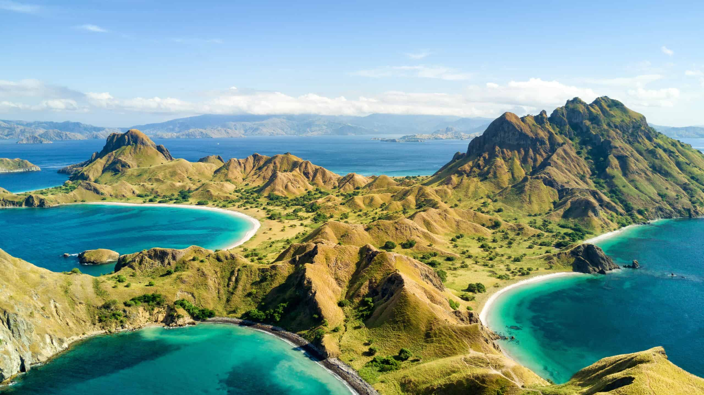
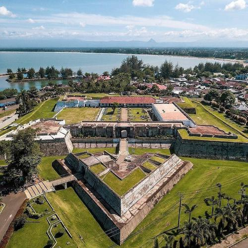
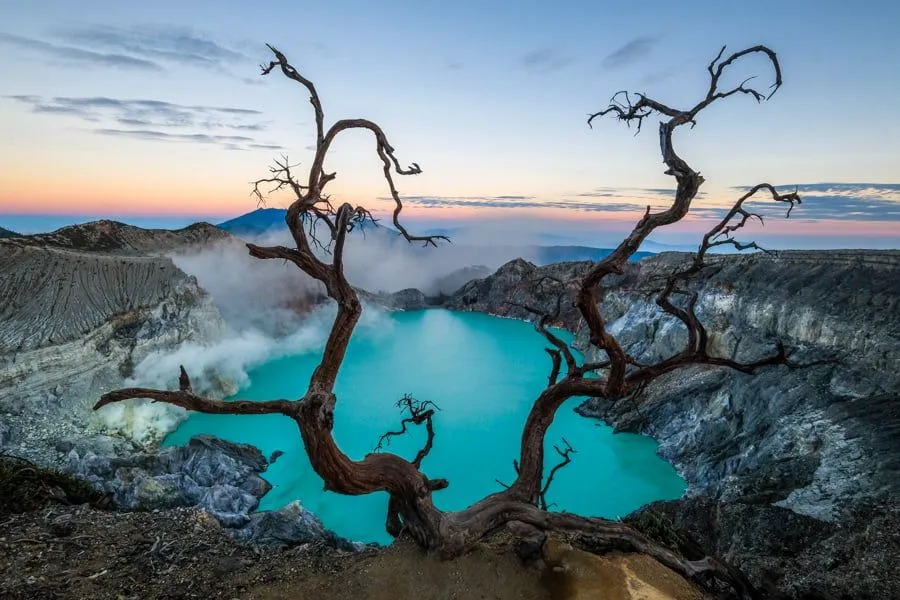

Destinasi Populer
Bali
Destinasi wisata dunia dengan keindahan pantai, budaya yang kaya, dan suasana tropis yang menenangkan.

Raja Ampat
Destinasi wisata dengan keindahan laut dan pulau yang menakjubkan.

Labuan Bajo
Surga wisata di Nusa Tenggara Timur yang terkenal dengan pulau-pulau indah dan habitat asli komodo.

Benteng marlborough
Benteng peninggalan Inggris terbesar di Asia Tenggara yang menyimpan sejarah kolonial di Bengkulu.

Ranu Kumbolo
Danau cantik di jalur pendakian Gunung Semeru dengan pemandangan alam yang memukau dan suasana yang menenangkan.

kawah ijen
Kawah vulkanik di Banyuwangi yang terkenal dengan fenomena blue fire dan keindahan danau belerangnya.